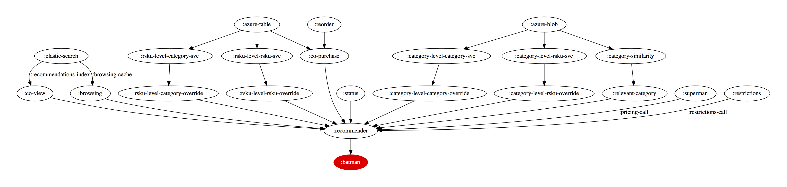

Recommender Overview
in 30 minutes
Recommender Map (Resource Based)

### Why (Good Parts)
- We do the hard stuff on `Tier 2`
- `Tier 1` becomes faster and simple
- Well-guarded if `Tier 2` system fails(does not update consul key); does not impact `Tier 1` service
- As long as you abide the contract on `Tier 1`, you can do massive changes in `Tier 2` without impacting `Tier 1`
- Easy to follow microservice structure
- Getting something out of the door is easy
- Well-understood and used in different part of the system(`category`, `category-extensions`)
- `DVar`s: update once; propagate in every part of system
### Why(Not so good parts)
- Cargo-cult programming
- May not be optimal for every scenario. One row change triggers update on the whole table
- May cause silent failures(out of date tables since Tier 1 systems do not know anything about it)
- Data duplication: we are storing the snapshots of table rather than changes
#### `POST /coview-recommendations`
1. Fetch co-view recommendations
2. If there are not enough(12), fetch recommendations through `browsing` call.
3. Make a pricing call to Superman
4. Make a restrictions call to RestrictionsAPI
5. Compile a payload that Batman likes
#### `POST /copurchase-recommendations`
1. Fetch co-purchase recommendations
2. Data hydration through `reorder` endpoint(this handles pricing call for us)
3. Restrictions call as usual
4. Compile same exact payload that Batman likes
#### `POST /relevant-category`
1. Fetch relevant categories for an item
2. Apply business logic for category name & images
3. Adult filtering and such
4. Compile a payload that Batman likes
#### `GET /status`
1. Ping Co-view
2. Ping Browsing
3. Ping Superman
4. Ping Restrictions
5. Report
## Onwards
- Model-based coview recommendations
- Content-based recommendations
## But Why
#### Lack of Evaluation
- We run an algorithm; no parameter optimization, no evaluation, no way to _tune_ or _optimize_ either offline or online.
- Hard to release a different algorithm; everything is tightly coupled and we cannot plug in one model over other.
- We need to carry the data around all the time in order to be able train it.
- Hard to do hybrid recommendations
- We should mix the pile time to time.
Model Based
 ## But Why
#### Limitations of Collaborative Filtering
- Cold Start: There needs to be enough views of users already in the system to find a match. New items need to get enough ratings.
- As we have more and more acquisitions and do not have enough data around views on these data, we would not be able to provide good recommendations.
- Popularity Bias: Hard to recommend items to someone with unique tastes.
- It is easy to recommend popular items(items from the tail do not get so much data and therefore not so much love; impacts the visibility)
### Content-Based Recommendation
- Common for recommending text-based products(web pages, usenet news messages)
- Items to recommnd are "described" by their associated features(e.g. keywords)
- User Model structured in a "similar" way as the content features/keywords more likely to occur in the preferred documents(lazy approach)
- Text documents recommended based on a comparison between their content(words appearing) and user model(a set of preferred words)
- The item similarity model can also be a classifier based on your favorite classifier algorithm(Neural Networks, Naive Bayes, ...) as long as it outputs a confidence or probability.
#### What is a content?
- What is a content of an item?
- It can be explicit attributes or characteristics of the item. For example for a film:
- Genre: Action / adventure
- Feature: Bruce Willis
- Year: 1965
- It can be textual content(title, description, table of content, etc.)
- Several techniques to compute the distance between two textual documents
- Can use NLP techniques to extract content features
- Can be extracted from the signal itself(audio, image)
#### Advantages of CB Approach
- No need for data on other users.
- No cold-start or sparsity problems.
- Able to recommend to users with unique tastes.
- Able to recommend new and unpopular items
- No first-rater problem
- Can provide explanations of recommended items by listing content-features that caused an item to be recommended.
#### Disadvantages of CB Approach
- Requires content that can be encoded as meaningful features.
- Some kind of items are not amenable to easy feature extraction methods(e.g. movies, music)
- Users' tastes must be represented as a learnable function of these content features.
- Hard to exploit quality judgments of other users.
- Difficult to implement serendipity(since we do not know which items are not being shown as much)
#### Of course, You have questions!
## But Why
#### Limitations of Collaborative Filtering
- Cold Start: There needs to be enough views of users already in the system to find a match. New items need to get enough ratings.
- As we have more and more acquisitions and do not have enough data around views on these data, we would not be able to provide good recommendations.
- Popularity Bias: Hard to recommend items to someone with unique tastes.
- It is easy to recommend popular items(items from the tail do not get so much data and therefore not so much love; impacts the visibility)
### Content-Based Recommendation
- Common for recommending text-based products(web pages, usenet news messages)
- Items to recommnd are "described" by their associated features(e.g. keywords)
- User Model structured in a "similar" way as the content features/keywords more likely to occur in the preferred documents(lazy approach)
- Text documents recommended based on a comparison between their content(words appearing) and user model(a set of preferred words)
- The item similarity model can also be a classifier based on your favorite classifier algorithm(Neural Networks, Naive Bayes, ...) as long as it outputs a confidence or probability.
#### What is a content?
- What is a content of an item?
- It can be explicit attributes or characteristics of the item. For example for a film:
- Genre: Action / adventure
- Feature: Bruce Willis
- Year: 1965
- It can be textual content(title, description, table of content, etc.)
- Several techniques to compute the distance between two textual documents
- Can use NLP techniques to extract content features
- Can be extracted from the signal itself(audio, image)
#### Advantages of CB Approach
- No need for data on other users.
- No cold-start or sparsity problems.
- Able to recommend to users with unique tastes.
- Able to recommend new and unpopular items
- No first-rater problem
- Can provide explanations of recommended items by listing content-features that caused an item to be recommended.
#### Disadvantages of CB Approach
- Requires content that can be encoded as meaningful features.
- Some kind of items are not amenable to easy feature extraction methods(e.g. movies, music)
- Users' tastes must be represented as a learnable function of these content features.
- Hard to exploit quality judgments of other users.
- Difficult to implement serendipity(since we do not know which items are not being shown as much)
#### Of course, You have questions!